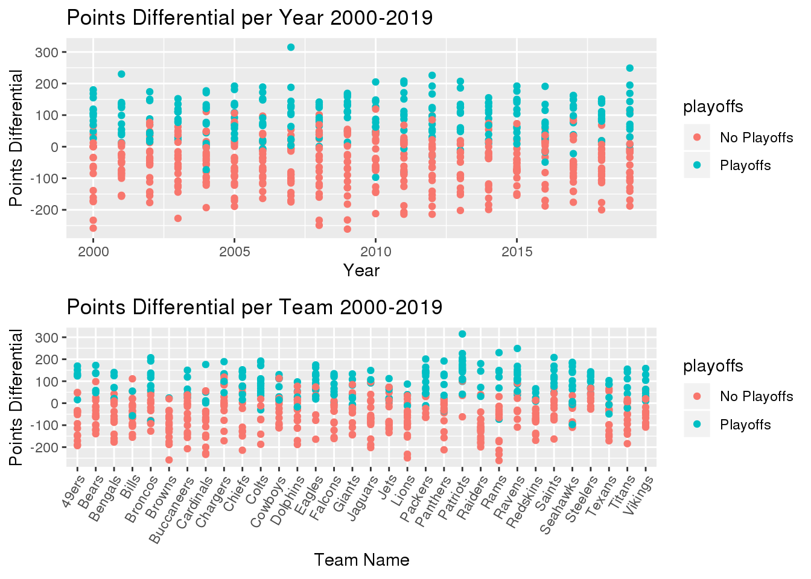
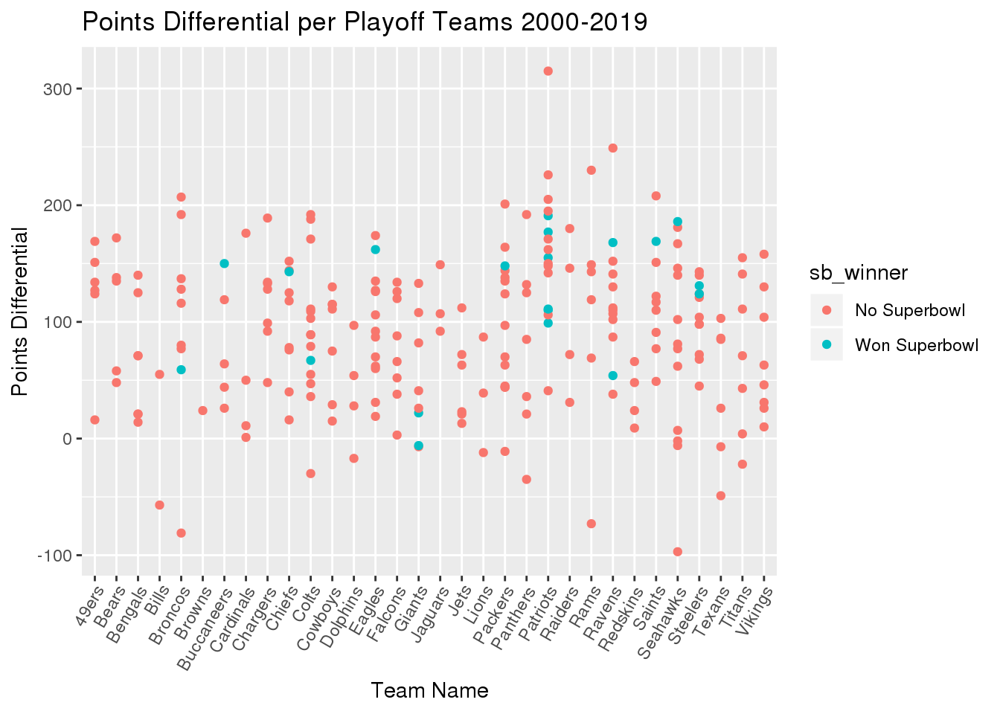
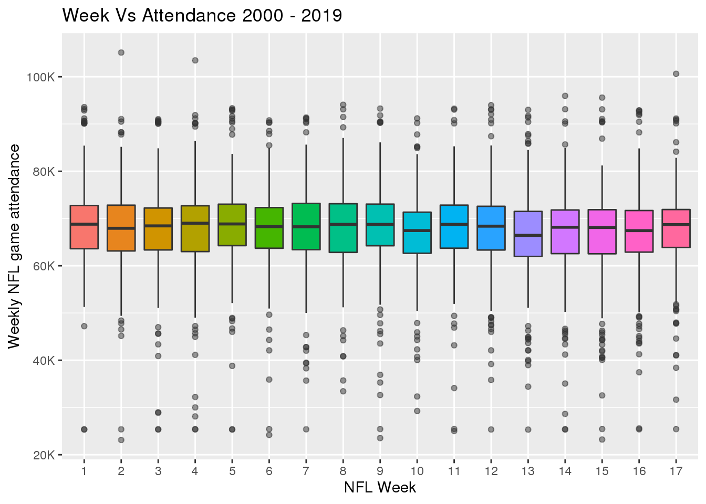

attendance50 <- readr::read_csv('https://raw.githubusercontent.com/rfordatascience/tidytuesday/master/data/2020/2020-02-04/attendance.csv')
standings <- readr::read_csv('https://raw.githubusercontent.com/rfordatascience/tidytuesday/master/data/2020/2020-02-04/standings.csv')
games <- readr::read_csv('https://raw.githubusercontent.com/rfordatascience/tidytuesday/master/data/2020/2020-02-04/games.csv')NFL Attendance
For my NFL Attendance project, I am using 3 proposed datasets coming from the Tidy Tuesdays website to analyze NFL attendance and how it affects the game. The three datasets are filled with data coming from the source Pro Football Reference. The first dataset is attendance.csv and it consists of 10,846 observations and 8 different variables.
head(attendance50)## # A tibble: 6 x 8
## team team_name year total home away week weekly_attendance
## <chr> <chr> <dbl> <dbl> <dbl> <dbl> <dbl> <dbl>
## 1 Arizona Cardinals 2000 893926 387475 506451 1 77434
## 2 Arizona Cardinals 2000 893926 387475 506451 2 66009
## 3 Arizona Cardinals 2000 893926 387475 506451 3 NA
## 4 Arizona Cardinals 2000 893926 387475 506451 4 71801
## 5 Arizona Cardinals 2000 893926 387475 506451 5 66985
## 6 Arizona Cardinals 2000 893926 387475 506451 6 44296The variable team is used to represents the team’s city and the variable team_name is used to represent the team’s mascot. The variable year represents what year the game is from. The variable total shows the total attendance for a team’s 17 weeks with each team having one bye week. The variable home shows the home teams attendance for the season and the variable away shows the away attendance. The variable week represents the week number for the season. Lastly the weekly_attendance variable shows the weekly attendance number.
The second dataset we used to analyze the affect of attendance on an NFL game is standings.csv. The dataset consists of 638 observations and 15 variables. The variables team and team_name still both represent the team’s city and the team’s mascot. The variable year represents the year. The variable wins represent the wins from 0 to 16 and the variable loss represent the losses from 0 to 16. The variables points_for and points_against represent the offensive and defensive performance by showing the points scored/the points scored on. The variable points_differential shows the point differential by performing (points_for – points_against). The variable margin_of_victory shows the margin of victory in a game by performing (Points Scored – Points Allowed)/ Games Played. The variable strength_of_schedule measures the Average quality of opponent measured by the SRS(Simple Rating System).. The variable simple_rating measures a team quality relative to average (0.0) by using the SRS “SRS = MoV + SoS = OSRS + DSRS”. The variables offensive_ranking and defensive_ranking measure a teams quality of offense or defense relative to the SRS(Simple Rating System). The variables playoffs and sb_winner shows wether a team made the playoffs or if they won the superbowl.
Question 1:
Is there a correlation between Home attendance and Win percentage in the NFL?
To find the correlation between Home attendance and Win percentage in the NFL I first had to omit the NA values so I could find the find the average home attendance for each team by dividing by the number of total home fans by games. I then created created another variable for the win percentage of each team by dividing the total wins by wins and losses.
nfl_data <- dplyr::left_join(attendance50, standings, games, by = c("year", "team_name", "team"))
nfl_data = na.omit(nfl_data)
nfl_data_numeric <- mutate_all(nfl_data, function(x) suppressWarnings(as.numeric(as.character(x))))
nfl_data_numeric['team'] = nfl_data['team']
nfl_data_numeric['team_name'] = nfl_data['team_name']
nfl_data_numeric['playoffs'] = nfl_data['playoffs']
nfl_data_numeric['sb_winner'] = nfl_data['sb_winner']
attendance = nfl_data_numeric[match(unique(nfl_data_numeric$home), nfl_data_numeric$home),]
attendance = subset(attendance, select = c(team_name, home, year, wins, loss))
attendance['win_percent'] = attendance['wins']/(attendance['wins']+attendance['loss'])
attendance['average_home_attendance'] = attendance['home']/16After I had created these variables I went to plot each teams dot with their average home attendance on the x axis and their all time win percent on the y axis. I then called the facet_wrap function to look at every years dots for average home attendance vs win percent. In the visuals below you can see that for almost all 20 years we see the teams with the higher percent having a larger home fan base. Showing that teams with larger fan bases tend to win.
ggplot(attendance, aes(average_home_attendance, win_percent)) +
geom_point(alpha = .8) +
theme(axis.text.x = element_text(angle = 55, vjust = 1.05, hjust = 1.05)) +
scale_y_continuous(labels = percent_format(), limits = c(0.0,1)) +
geom_smooth() +
facet_wrap(~year) +
ggtitle("Win Percentages vs Average Home Attendance") +
xlab("Average Home Attendance") +
ylab("Win Percentage")## `geom_smooth()` using method = 'loess' and formula 'y ~ x'## Warning: Removed 1 rows containing missing values (geom_smooth).
Question 2:
_ Can a team with a negative point differential make the playoffs or maybe even win the superbowl?
A teams point differential is made up of the net amount of points scored and points scored agianst. That being said is it possible for a team to make the playoffs while being outscored in total by their opponents.
nfl_data1 = select(nfl_data, team_name, points_differential, year, playoffs)
nfl_data1 = unique(nfl_data1)
head(nfl_data1)## # A tibble: 6 x 4
## team_name points_differential year playoffs
## <chr> <dbl> <dbl> <chr>
## 1 Cardinals -233 2000 No Playoffs
## 2 Falcons -161 2000 No Playoffs
## 3 Ravens 168 2000 Playoffs
## 4 Bills -35 2000 No Playoffs
## 5 Panthers 0 2000 No Playoffs
## 6 Bears -139 2000 No PlayoffsTo see if this is possible I first plotted each years point differentials with the red dots meaning they did not make the playoffs and a blue dot meaning they did. In the data I found a good few teams with more points scored than scored against that had missed the playoffs but I found only a very few who had made the playoffs being outscored proving it is possible. I then decided to graph each team on the X-axis to see which of the teams had made the playoffs being outscored and I found that the Broncos, Bills and Seahawks had all made the playoffs with a negative net point differential.
g5 <- ggplot(nfl_data1, aes(year, points_differential, fill = playoffs)) +
geom_point(aes(color = playoffs)) +
theme(legend.position = "right") +
xlab("Year") +
ylab("Points Differential") +
ggtitle("Points Differential per Year 2000-2019")
g6 <- ggplot(nfl_data1, aes(team_name, points_differential, fill = playoffs)) +
geom_point(aes(color = playoffs)) +
theme(legend.position = "right", axis.text.x = element_text(angle = 60, vjust = 1.05, hjust = 1.05)) +
xlab("Team Name") +
ylab("Points Differential") +
ggtitle("Points Differential per Team 2000-2019")
grid.arrange(g5, g6, nrow = 2)
Next I decided to see if a team had ever won the superbowl while being outscored in the season. To make this dataset cleaner I decided to remove any teams that had not made the playoffs and created a legend with the color red being teams that did not win and blue being for the Superbowl champs. I then plotted the graph and saw that the New York Giants had actually won the Superbowl while having a negative point differential in their season.
nfl_data2 = select(nfl_data, team_name, points_differential, year, playoffs, sb_winner)
nfl_data2 = unique((nfl_data2))
nfl_data2 = subset(nfl_data2, playoffs=='Playoffs')
g7 <- ggplot(nfl_data2, aes(team_name, points_differential, fill = sb_winner)) +
geom_point(aes(color = sb_winner)) +
theme(legend.position = "right", axis.text.x = element_text(angle = 60, vjust = 1.05, hjust = 1.05)) +
xlab("Team Name") +
ylab("Points Differential") +
ggtitle("Points Differential per Playoff Teams 2000-2019")
g7
Question 3:
How does NFL wide attendance change throughout the season?
NFL attendance fluctuates throughout the season as different teams play each week creating variability in the amount of fans attending the games each week. To better understand how each week number differs I created a graph below that presents the boxplots of each NFL week’s weekly attendance through the years 2000 to 2019. The reason I chose to use box-plots for my analyziation is because of the abillity to see the IQR, Max, Min, Average and outliers. In the plots I found that weeks’ 1, 5, 8 and 17 were all on the higher side attendance wise and that weeks 10 and 13 had less attendance then average. This differnce is very miscule as the box plots are almost identical in shape and size with an average of about 65,000 fans per NFL game from the time period of 2000 to 2019.
nfl_data %>%
mutate(week = factor(week)) %>%
ggplot(aes(week, weekly_attendance, fill = week)) +
geom_boxplot(show.legend = FALSE, outlier.alpha = 0.3) +
labs(title = "Week Vs Attendance 2000 - 2019", x = "NFL Week", y = "Weekly NFL game attendance") +
theme_grey() +
scale_y_continuous(label = scales::unit_format(unit = "K", scale = 1/1000, sep = "")) 